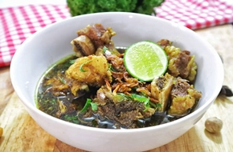

< < Daftar resep
bahan |
cara memasak
Sop Konro Khas Makassar

Konro atau Sup Konro adalah masakan sup iga sapi khas indonesia yang
berasal dari tradisi Bugis dan Makassar,dengan tampilan sup yang kecoklatan dan di hiasi dengan
berbagai rempah dan juga ketupat yang mampu mengugah selera makan,Sup ini amat populer di kota Makassar
dan sudah Menyebar Luas ke Pelosok Nusantara.
Bahan-bahan:
- 1/2 kg tulang Iga
- 1.5 liter air mendidih
- 2 lembar daun salam
- 2 lembar daun jeruk
- 10 gr asam jawa yang di larutkan
- 1 sdm kaldu bubuk
- secukupnya Daun bawang
- 1 SDM Kecap
- 1 ruas jari lengkuas geprek
- secukupnya Daun bawang & Jeruk nipis
Bumbu Halus:
- 6 Siung bawang merah
- 3 siung bawang putih
- 1/4sd Jintan
- 1/4 parutan biji pala
- 1 Ruas jari jahe & kunyit
- 3 cm lengkuas
- 3 batang serai
- 1Sdt Ketumbar
- 2 Buah keluak
Cara Memasak:
- Masukkan Iga sapi ke dalam air mendidih.
Tambahkan daun salam, daun jeruk, lengkuas, larutan asam jawa. Aduk merata. Rebus tulang iga.
- Rendam keluak menggunakan air panas hingga lemas.
- Tumis bumbu yang sudah di haluskan.
Tambahkan cengkeh, bunga lawang, kapulaga, kayu manis, daun bawang tumis bumbu hingga wangi.
- Setelah bumbu wangi, masukkan ke dalam rebusan tulang iga.
- Tambahkan garam, gula, merica, kaldu bubuk dan kecap manis,Aduk merata.
- Rebus kembali selama kurang lebih 45 menit.
- Setelah matang taburi daun bawang, lalu sajikan selagi hangat.
- Sop konro makassar ala Dapur Adis siap di santap.
kembali keatas
< < Daftar resep